<center>
<p style="text-align: center;"></p>

<table border="0" cellpadding="20" cellspacing="1">
<tbody>	<tr>
<td style="background-color: rgb(255, 255, 255); font-size:18px;">
<span style="font-family:times new roman,serif;">

<nobr>


&nbsp;
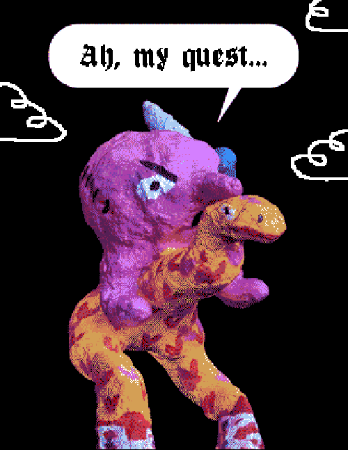
&nbsp;
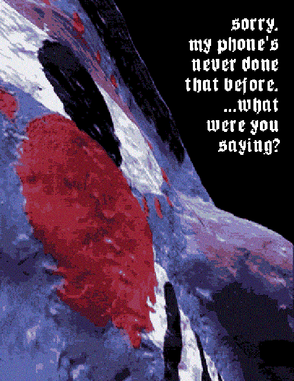
&nbsp;>
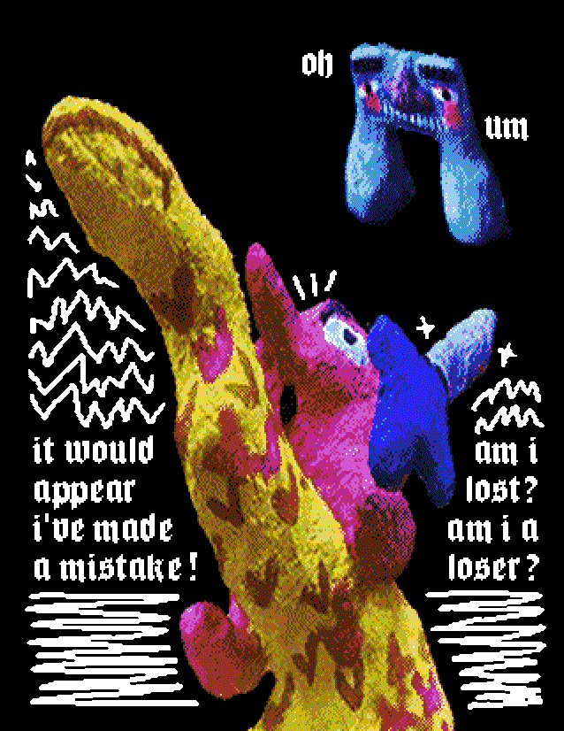
&nbsp;
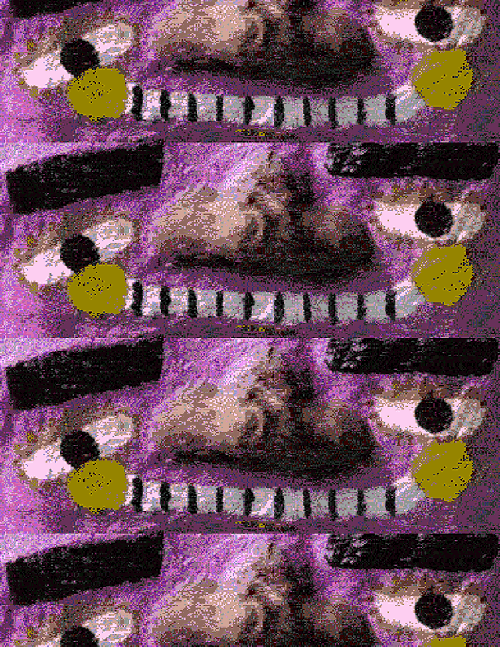
&nbsp;
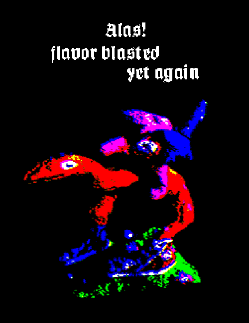
&nbsp;
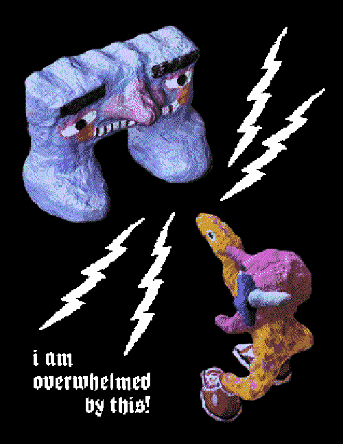
&nbsp;
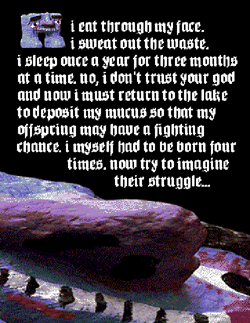
&nbsp;
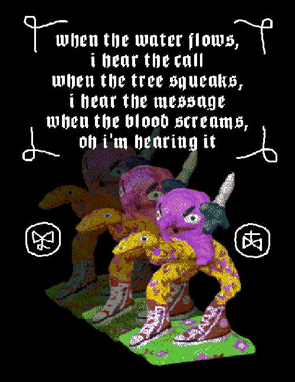
&nbsp;
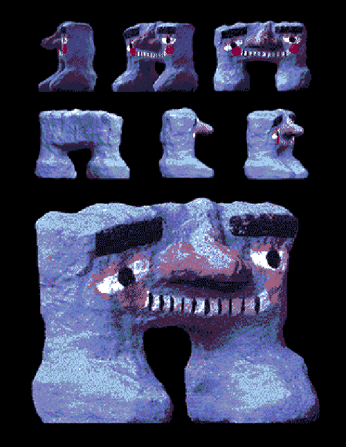
&nbsp;
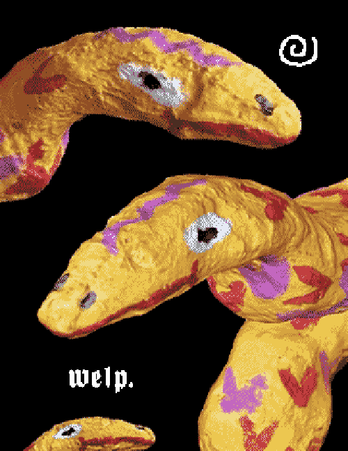
&nbsp;
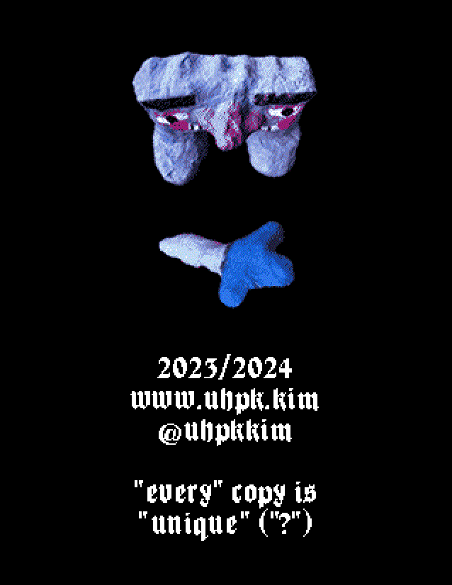

</nobr>

</td></tr></tbody></table></center>


ASS
front quest phone loser stack flavor encounter sweat blood dwingo welp back@
front quest phone loser encounter sweat stack flavor blood dwingo welp back@
front quest stack flavor phone loser blood dwingo encounter sweat welp back@
front quest encounter sweat phone loser blood dwingo stack flavor welp back@
front quest blood dwingo encounter sweat stack flavor phone loser welp back@
front quest encounter sweat blood dwingo phone loser stack flavor welp back@
front quest encounter sweat phone loser blood dwingo stack flavor welp back@
front quest phone loser encounter sweat stack flavor blood dwingo welp back@

BITCH
front quest phone loser stack flavor blood sweat encounter dwingo welp back@
front quest phone loser blood sweat stack flavor encounter dwingo welp back@
front quest stack flavor phone loser encounter dwingo blood sweat welp back@
front quest blood sweat phone loser encounter dwingo stack flavor welp back@
front quest encounter dwingo blood sweat stack flavor phone loser welp back@
front quest blood sweat encounter dwingo phone loser stack flavor welp back@
front quest blood sweat phone loser encounter dwingo stack flavor welp back@
front quest phone loser blood sweat stack flavor encounter dwingo welp back@

COCK
(I HAVENT SCREENED THESE YET)
front dwingo loser phone stack blood sweat welp quest encounter flavor back@
front dwingo loser phone sweat welp stack blood quest encounter flavor back@
front dwingo stack blood loser phone quest encounter sweat welp flavor back@
front dwingo sweat welp loser phone quest encounter stack blood flavor back@
front dwingo quest encounter sweat welp stack blood loser phone flavor back@
front dwingo sweat welp quest encounter loser phone stack blood flavor back@
front dwingo sweat welp loser phone quest encounter stack blood flavor back@
front dwingo loser phone sweat welp stack blood quest encounter flavor back@

DICK 
front blood sweat loser quest stack phone welp encounter dwingo flavor back@
front blood sweat loser phone welp quest stack encounter dwingo flavor back@
front blood quest stack sweat loser encounter dwingo phone welp flavor back@
front blood phone welp sweat loser encounter dwingo quest stack flavor back@
front blood encounter dwingo phone welp quest stack sweat loser flavor back@
front blood phone welp encounter dwingo sweat loser quest stack flavor back@
front blood phone welp sweat loser encounter dwingo quest stack flavor back@
front blood sweat loser phone welp quest stack encounter dwingo flavor back@


EJACULATION
dwingo - quest

1 2 3 4 5 6 7 8
1 2 5 6 3 4 7 8
3 4 1 2 7 8 5 6
5 6 1 2 7 8 3 4
7 8 5 6 3 4 1 2
5 6 7 8 1 2 3 4
5 6 1 2 7 8 3 4
1 2 5 6 3 4 7 8


FUCK
encounter - loser


1 2 3 4 5 6 7 8
1 2 5 6 3 4 7 8
3 4 1 2 7 8 5 6
5 6 1 2 7 8 3 4
7 8 5 6 3 4 1 2
5 6 7 8 1 2 3 4
5 6 1 2 7 8 3 4
1 2 5 6 3 4 7 8

1 2 3 4 5 6 7 8
1 2 5 6 3 4 7 8
3 4 1 2 7 8 5 6
5 6 1 2 7 8 3 4
7 8 5 6 3 4 1 2
5 6 7 8 1 2 3 4
5 6 1 2 7 8 3 4
1 2 5 6 3 4 7 8
